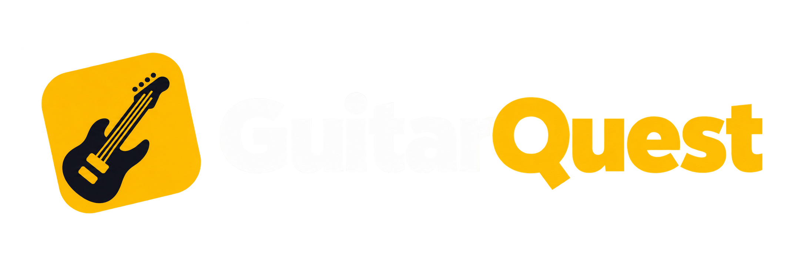
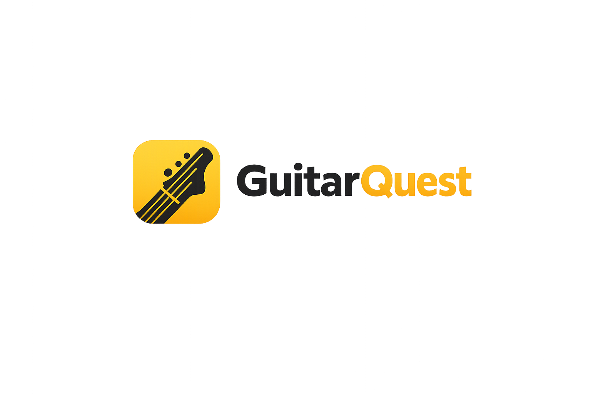

↯
O conteúdo some rápido
Você entende hoje, mas não encontra a mesma nota amanhã. Sem revisão no momento certo, a memória não consolida.

Quero conhecerO GuitarQuest transforma teoria em prática no instrumento, percebe onde você precisa melhorar e traz o conteúdo de volta na hora certa.
Mais uma nota. Mais perto do seu objetivo.
Muitos cursos avançam quando você clica em “próximo”. O GuitarQuest avança quando o conteúdo começa a fazer parte de você.
Você entende hoje, mas não encontra a mesma nota amanhã. Sem revisão no momento certo, a memória não consolida.
Uma sequência fixa ignora o que você já domina e o que ainda precisa voltar para a prática.
Saber a resposta na tela é diferente de localizar, ouvir e produzir a nota na guitarra.
Explore algumas telas reais do MVP: trilhas completas, teoria aplicada, exercícios no braço, reconhecimento por microfone e revisões que voltam quando fazem diferença.
O aluno enxerga a jornada completa, o progresso e o próximo conteúdo a dominar.
O motor de aprendizado acompanha seu desempenho e monta uma prática que combina conteúdo novo com habilidades que precisam de reforço.
O exercício pede. Você pensa, localiza e responde. A posição aparece depois da tentativa.
Exercícios com microfone conectam o que você vê ao som que produz.
Você sabe por que aquele exercício voltou e qual habilidade está reforçando.
O conteúdo começa na base, conecta ouvido e instrumento e evolui para aplicação musical — sem jogar conceitos soltos no seu colo.
Notas, acidentes, tons, semitons e oitavas.
Localização das notas e reconhecimento visual.
Distâncias, tríades e formação harmônica.
Pentatônicas, CAGED e construção de frases.
Para quem está começando, para quem já tentou outros caminhos e para quem quer transformar conhecimento solto em domínio real do instrumento.
Quero fazer parte →Comece sem se perderUma sequência clara mostra o que aprender agora.
Pratique com intençãoCada exercício reforça uma habilidade identificável.
Volte sem recomeçarSeu histórico encontra o ponto exato da jornada.
Enxergue sua evoluçãoPrecisão, constância e domínio deixam de ser sensação.
Experimente a base gratuitamente ou libere a jornada completa com prática adaptativa e todos os módulos.
Conheça o método GuitarQuest e construa os primeiros fundamentos sem cobrança.
Todo o conteúdo, prática avançada e revisões que se adaptam ao que você precisa fixar.
Pagamento seguro processado pela Stripe. Cancele ou gerencie sua assinatura pelo próprio aplicativo.

O GuitarQuest está em sua primeira fase pública. Teste o MVP e acompanhe de perto a evolução do aprendizado adaptativo.
Novidades e abertura dos testes serão divulgadas em breve.Não. A jornada começa pelos fundamentos e organiza os conceitos numa sequência progressiva. Quem já sabe pode revisar a base e avançar com mais segurança.
Não. Nos exercícios de som, o GuitarQuest utiliza o microfone disponível no dispositivo para reconhecer notas individuais tocadas no instrumento.
É uma revisão programada com base no seu desempenho. Erros recentes, precisão e tempo sem praticar ajudam o sistema a decidir o que deve reaparecer.
Não. Ele organiza estudo, teoria e prática e pode complementar aulas, oferecendo constância e feedback entre os encontros com um professor.
Sim. O MVP está disponível em acesso antecipado para os primeiros usuários, com novas melhorias sendo publicadas continuamente.